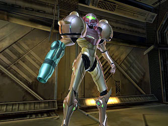
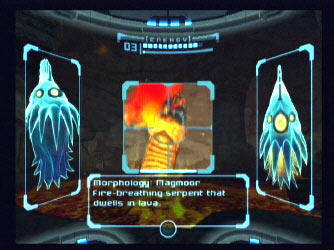

Metroid Prime start:
A short introductory movie shows Samus on her way to a space station orbiting the planet Tallon IV. The movie shows high levels of detail and lighting, showing up all the intricate platforms, pipes and walkways of the space station - hard to believe these are in-game graphics. Before docking, Samus fights her way through the rock debris surrounding. The music and sound effects set the game off in the right manner, creating the mood for action.
After docking with the space station, control is given to the player, who can roam about the deserted space station in search of information whilst also learning the control mechanism. The poorly lit corridors and computer screen lit larger rooms give a very Aliens feel to this early part of the game. After some progression, Space Pirates attack and once eliminated, fully equipped Space Pirates put up a tougher fight. Tactics are needed in order to defeat this round of enemy, using the newly earned Lock-On and hiding behind pillars, strafing and firing at the enemy, they are easily defeated.
The first boss battle of the game follows - it fires green vomit and swipes its lacerating claws at every opportunity. Once defeated, a sharp exit is required. The player has minutes to escape from the space station before it blows up, but unfortunately, Samus gets caught in the blast. The result of this is, all the weapons and power suit abilities have been stripped, and the only way forward is to descend to the depths of Tallon IV.
On the fall to the planet, Samus looses her sight on the enemy. The atmosphere is set by the torrents of rain which lash down upon her and the landscape. A quick look around and explorations conclude that the area is a lush forest complete with rivers, waterfalls and birds which circle overhead.